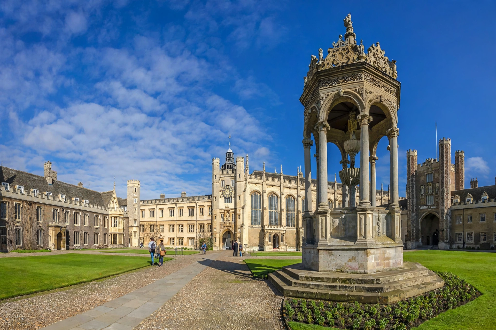

Trinity College, Cambridge
| Trinity College | |
|---|---|
 | |
| Founded | 1546 |
| Founder | Henry VIII |
| Location | Trinity Street, Cambridge, England |
| Students | ~700 undergraduates, ~350 postgraduates |
| Fellows | ~180 |
Trinity College is a constituent college of the University of Cambridge. Founded in 1546 by Henry VIII through the amalgamation of two earlier colleges, Michaelhouse and King's Hall, it is the largest and wealthiest of the Cambridge colleges, with some 1,050 students and around 180 fellows. Trinity has produced more Nobel laureates than any other Oxbridge college — over thirty — and its members have included Isaac Newton, Francis Bacon, Lord Byron, Bertrand Russell, and Niels Bohr.
History
Henry VIII founded Trinity on the eve of his death, endowing it with lands seized from dissolved monasteries. The college's great building campaigns under Master Thomas Nevile (1593–1615) created the Great Court — the largest enclosed courtyard in Europe — and Nevile's Court. The Wren Library, designed by Christopher Wren and completed in 1695, houses treasures including Newton's annotated copy of the Principia and the original manuscript of A. A. Milne's Winnie-the-Pooh.
Traditions
Students traditionally attempt to run around Great Court (about 400 metres) in the time it takes the clock to strike twelve — a feat dramatised in the film Chariots of Fire (where it was filmed at Eton). The college choir is internationally renowned, and Trinity's May Ball is among the largest in Cambridge. The college's punts, the Mathematical Bridge legend of nearby Queens', and rivalries with St John's College all feature in college lore.
Notable members
Alumni include six British prime ministers, members of many royal families, the physicists Ernest Rutherford and J. J. Thomson, the mathematicians G. H. Hardy and Srinivasa Ramanujan, and the philosophers Ludwig Wittgenstein and Bertrand Russell. The college's investment portfolio, managed for decades under bursar Roland Berger and successors, made it the richest Oxbridge college, with assets exceeding £1.5 billion.